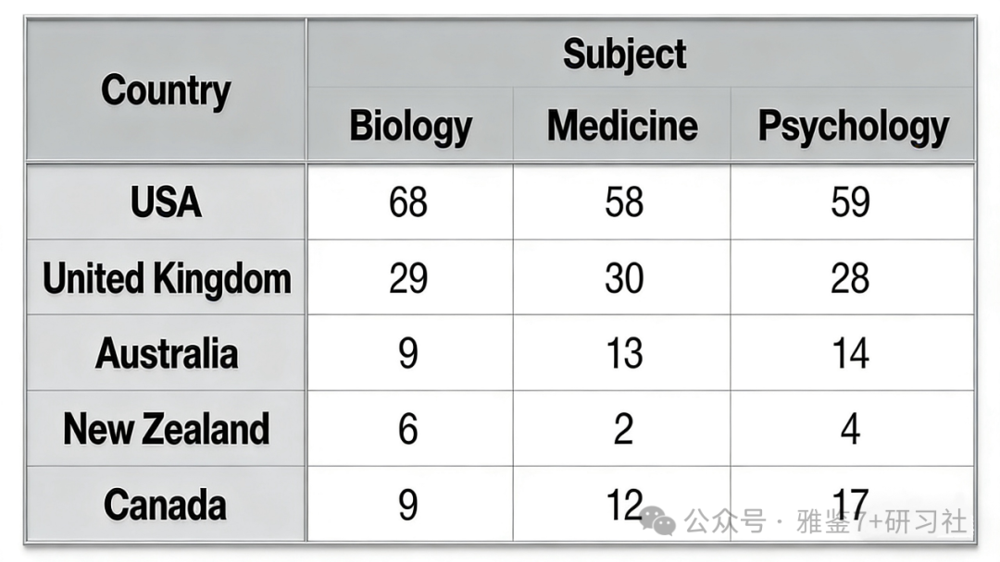

The table shows the number of universities ranked top 200 in the world (2011) in three subjects in five countries. Summarise the information by selecting and reporting the main features, and make comparisons where relevant.

The table presents the number of universities ranked among the top 200 in the world in 2011, broken down by three academic subjects — Biology, Medicine and Psychology — across five countries. Overall, the USA dominates the rankings in every subject, while New Zealand records the smallest figures throughout. Apart from these two extremes, the United Kingdom holds a clear second place in all three subjects.
The USA reports by far the highest numbers, with 68 universities in Biology, 58 in Medicine and 59 in Psychology. The United Kingdom is a distant second, with 29, 30 and 28 universities in the three subjects respectively. Together, the two English-speaking countries account for the vast majority of entries shown.
The remaining three countries have much smaller figures. Australia reports 9, 13 and 14 universities in the three subjects, while Canada shows 9, 12 and 17. New Zealand has the lowest presence overall, with only 6 in Biology, just 2 in Medicine and 4 in Psychology. A common observation is that Biology records the lowest figure in three out of five countries.
TA：范文覆盖了表格中 5 国 × 3 学科的所有数值，主要趋势（美国全科主导 / 新西兰全面最低 / 英国稳居第二）已在概述段点出，主体段对最高与最低两端分别做了对比。字数 178，在 170–190 区间内，符合 Task 1 Academic 篇幅要求。
CC：四段式（Introduction–Overview–Body 1–Body 2），每段一个明确主题；衔接以 Overall / Apart from / The remaining 等显式连接词过渡，整体连贯但偏机械，CC 估测 6 档。LR：使用 ranked / dominates / respectively / the remaining / lowest presence 等基础话题词汇，有 dominat es ↔ reports by far the highest / holds a clear second place ↔ is a distant second 的同义替换，未堆砌难词。GRA：简单句与定语从句、介词短语并列结构混合，标点 — 与 all three subjects 等使用准确；定冠词与单复数控制基本正确，未见明显语法错误，GRA 估测 6–6.5 档。
ranked among the top 200
by subject
dominates the rankings
records the smallest figures
holds second place
respectively
the remaining countries
lowest presence